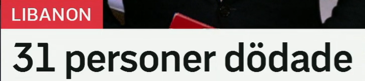
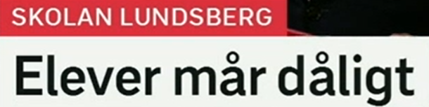
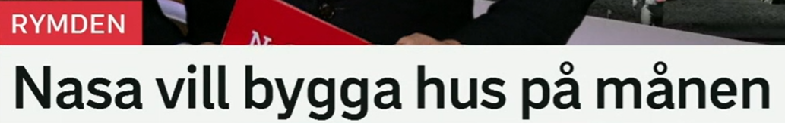
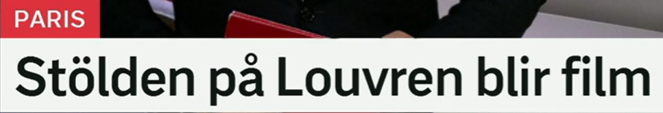

31 personer dödade
31 人死亡/遇害。
en person 人；新闻统计中常用 personer，比 människor 更偏中性、数字化。搭配：skadade personer 受伤人员，saknade personer 失踪人员。
Tre personer skadades i attacken. 三人在袭击中受伤。
来自动词 döda 杀死、造成死亡。dödade 可作“被杀死的/遇害的”。相关词：död 死亡，dödsfall 死亡病例，omkomna 遇难者。
Antalet dödade steg under natten. 夜间死亡人数上升。
瑞典语标题常用数字开头制造信息密度。读法是 trettioen。新闻里还会看到 minst 31 至少 31，över 31 超过 31。
Minst 31 personer har dödats. 至少 31 人已经死亡。
标题省略
31 personer dödade 可能省略了 har dödats。完整句可写：31 personer har dödats.

Elever mår dåligt
学生们状态不好/身心不适。
en elev 学生，常指中小学学生；大学生更常用 student。相关词：skola 学校，lärare 老师，klass 班级。
Många elever behöver mer stöd. 很多学生需要更多支持。
原形 må，表示身体或心理状态。常见问候：Hur mår du? 你好吗？回答：Jag mår bra/dåligt.
Hon mår bättre i dag. 她今天感觉好些了。
dålig 差的、不好的；må dåligt 是固定搭配，表示身体不舒服或心理状态差。反义：må bra 感觉好。
Eleverna mår dåligt av stressen. 学生们因压力而状态不好。
状态表达
må + bra/dåligt/bättre/sämre = 感觉好/不好/更好/更差。这是瑞典语里非常基础也非常高频的身体心理状态表达。

Nasa vill bygga hus på månen
NASA 想在月球上建房子。
原形 vilja，表示“想、愿意”。后面直接接动词原形：vill bygga 想建，vill åka 想去。
Forskare vill testa ny teknik. 研究人员想测试新技术。
建造。名词 ett bygge 工地/建设项目，en byggnad 建筑，byggmaterial 建筑材料，byggare 建筑工人。
Kommunen vill bygga fler bostäder. 市政府想建更多住房。
ett hus 房子；复数也常是 hus。相关词：bostad 住房，hem 家，byggnad 建筑物。
De bygger nya hus nära stationen. 他们在车站附近建新房。
månen 月球/月亮。天体表面常用 på：på jorden 在地球上，på Mars 在火星上，på månen 在月球上。
Astronauter landade på månen. 宇航员登陆了月球。
愿望/计划句型
A vill + 动词原形 = A 想要做某事。新闻标题中常表示计划、目标或意图。

Stölden på Louvren blir film
卢浮宫盗窃事件将被拍成电影。
来自 en stöld 盗窃、偷盗；定形 stölden = 这起盗窃。相关词：stjäla 偷，tjuv 小偷，rån 抢劫。
Polisen utreder stölden. 警方正在调查这起盗窃案。
博物馆、学校、机构名常可用 på 表示“在……机构/场所”。例如 på museet 在博物馆，på universitetet 在大学。
Utställningen visas på Louvren. 展览在卢浮宫展出。
bli 表示“变成、成为”。blir film = 成为电影/被拍成电影。相关：bli bok 被写成书，bli serie 被改编成剧集。
Romanen blir film nästa år. 这部小说明年将被拍成电影。
改编表达
X blir film 是标题里很自然的说法。更完整可以说：Stölden på Louvren ska bli film.
复习表：从标题词扩到词汇组
| 关键词 | 延伸词汇 | 记忆角度 |
|---|---|---|
| döda | dödade, död, dödsfall, omkomna, skadade | 伤亡报道 |
| må | mår bra, mår dåligt, mår bättre, mår sämre | 身体/心理状态 |
| elev | elever, skola, klass, lärare, stöd | 学校词汇 |
| bygga | bygge, byggnad, byggmaterial, bostad, hus | 建设与住房 |
| månen | rymden, astronaut, landa, Mars, jorden | 太空词汇 |
| stöld | stjäla, tjuv, rån, utreda, brott | 盗窃与犯罪 |
练习 1
把“至少五人死亡”译成瑞典语。提示：Minst fem personer har dödats.
练习 2
用 må dåligt 写“学生们因为压力状态不好”。提示：Eleverna mår dåligt av stress.
练习 3
说“他们想在火星上建房子”。提示：De vill bygga hus på Mars.
练习 4
把“这本书将被拍成电影”译成瑞典语。提示：Boken blir film.